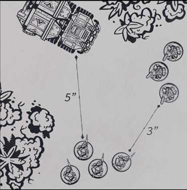
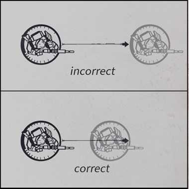
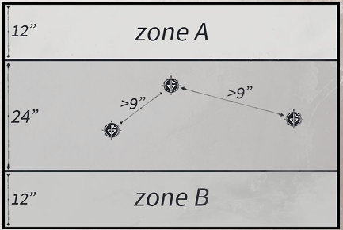
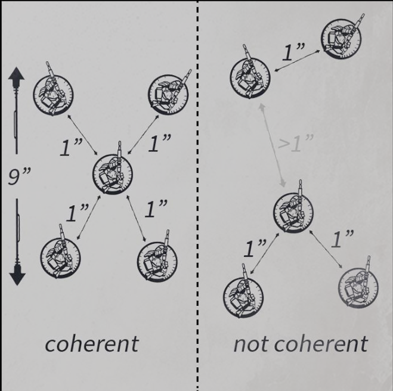
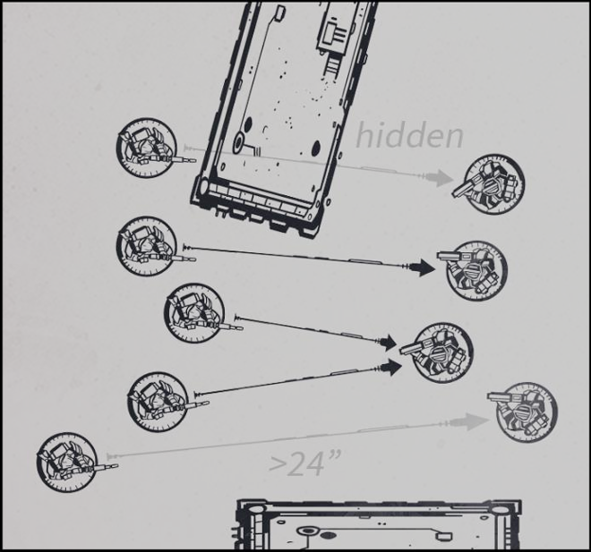
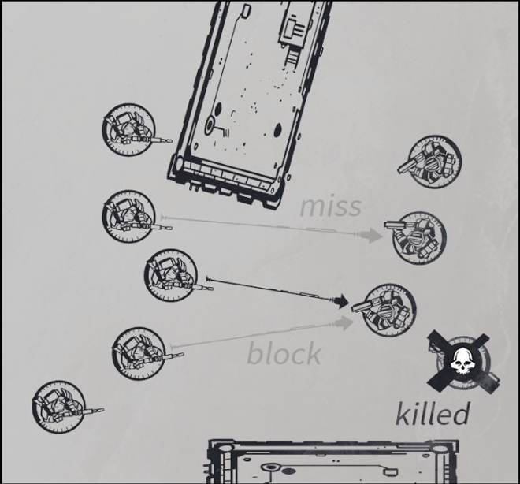
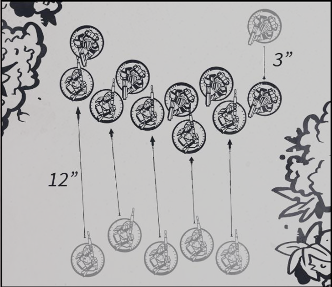
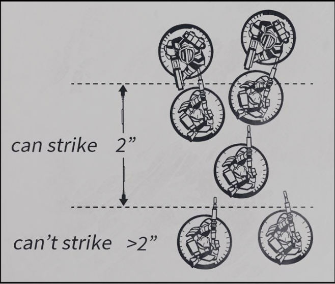

Lost in a galaxy far from our own, humanity struggles to survive amongst the stars.
Earth is but a distant memory for those beneath the grim tapestry of war-torn worlds that form the new constellations of this sector. Looming over them, massive fleets of spaceborne vessels creep over the horizon, blocking out the stars as they slowly approach a Jumpgate.
Beyond this gate, lies the violence and beauty of the wider Sirius Sector. A myriad of systems, none left untouched by the ravages of war. Here, countless battles are constantly fought.
Bullets hiss across once lush worlds stripped bare by the greed of interstellar industry. Serrated claws, honed through genetic engineering, clash against energized plasma blades, as old foes fight bitterly to the death through the wilds of uncharted planets.
Matter is bent and shaped according to the will of powerful minds, whilst forces beyond mortal understanding pour forth from wormholes to wreak havoc and destruction on poor unsuspecting souls.
Vital trade routes are contested along the edge of remote systems by massive battle fleets, while the sector's fate is meted out in dark smoky rooms by political envoys. On the streets of mega cities, zealous preachers and visionaries call out to the masses, hoping to foster their own grim ambitions.
As all this unfolds, dispassionate eyes watch on from a distance, carefully considering the outcome of each clash, as promising commanders and leaders rise and fall throughout the battlefields of the Sirius Sector.
How will you forge your path through this Grimdark Future?

Grimdark Future is a miniature wargame set in a war-torn sci-fi future, which is played using 32mm miniatures. The game mechanics are designed to be easy to learn but hard to master, pinging engaging sci-fi battles for new and experienced players alike. This rulebook is divided into 4 sections:
We recommend that you start off by playing with just a few advanced rules first, and then gradually add more as you get more comfortable with them.
Once you feel like you've gained a good understanding of the game, you can then try out the total conversions, which provide a radically different experience from the base rules.
OPR (www.onepagerules.com) is the home of many free games which are designed to be fast to learn and easy to play.
This project was made by gamers for gamers and it can only exist thanks to the support of our awesome community.
If you want to help us in making more awesome content, you can support us on Patreon: www.patreon.com/onepagerules
Thank you for playing!
Created By: Gaetano Ferrara
Game Design: Gaetano Ferrara
Illustrations: Fran Fernandez, Joao Fiuza, Brandon Gillam
When playing a complex game there are going to be occasions where a situation is not covered by the rules, or a rule does not seem quite right. When that is the case use common sense and personal preference to resolve the situation.
If you and your opponent cannot agree on how to solve a situation, use the following method in the interest of time.
Roll one die. On a result of 1-3 player A decides, and on a result of 4 6 player B decides. This decision then applies for the rest of the match, and once the game is over you can continue to discuss the finer details of the rules.
This game was written to be played with 32mm scale models in mind, which are mounted on round bases. These bases come in various sizes, and we recommend that you always mount miniatures on the bases they come with.
Here are some rough guidelines for model and base sizes:
Note that the base size that you use doesn't matter, as long as you keep base sizes consistent across all models.
In the rules, individual miniatures are referred to as models, whilst groups of one or more models are referred to as units.
This means that when a rule applies to a unit it applies to all miniatures within that unit, whilst if a rule applies to a model it only applies to one individual miniature.
Units come with a variety of statistics that define who they are and what they can do.
To play the game you are going to need some six-sided dice, which we will refer to as D6. Depending on how many models you are playing with, we recommend having at least 10 to 20 dice to keep things fast.
Additionally, we recommend having dice of multiple colors so that you can combine them for faster rolling. Whenever a unit is using multiple weapons, you can use different colors for each weapon, and then roll them all at once.
Sometimes the rules will refer to different types of dice, for example D3, 2D6 and D6+1. There are many types of dice, but the notation remains the same, so just apply the following explanations to all types of weird dice you come across.
Whenever a rule tells you to re-roll a dice result, simply pick up the number of dice you have to re-roll, and roll them again. The result of the second roll is the final result, even if it's worse than the first. A die roll may only be re-rolled once, regardless of how many rules apply to it.
Whenever a rule tells you to roll-off, all players involved in the roll off must roll one die, and then compare their results. The player with the highest result wins the roll-off, and in the event of a tie the players must re-roll until there is a winner.
During the game you will be required to take Quality tests in order to see if a unit succeeds at doing various things such as hitting its targets or passing morale tests.
Whenever a rule states that a unit must take a Quality test, roll one die. If you score the unit's Quality value or higher, then it counts as a success, else it counts as a fail.
Example: A model with Quality 4+ must take three Quality tests. The player rolls three dice and scores a 3, a 4 and a 5. This means that the model gets two successes (the 4 and 5), and one fail (the 3).
Throughout the game there are going to be rules that apply modifiers to your die rolls. These will usually raise or lower the value of a unit's roll results by either +1 or -1, but the exact number may vary.
Whenever a modifier applies to one of your rolls, simply add or subtract the value from the roll and the new value counts as the final result, however a roll of 6 always counts as a success and a roll of 1 always counts as a fail, regardless of how much it is being modified by.
Example: A model with Quality 4+ must take three Quality tests with a -1 modifier. The player rolls three dice and scores a 3, 4 and 5, but because of the modifier the final result is a 2, a 3 and a 4.
All weapons in the game are separated into two categories: ranged weapons and melee weapons. Ranged weapons have a range value and can be used for shooting, whilst melee weapons don't have a range value and can be used in melee.
Weapons profiles are represented like this:
Example: Heavy Rifle (24", A1, AP(1))
To play the game you are going to need a ruler marked in inches, which you may use to measure distances at any time.
Distances are usually measured from a model's base, however if a model has no base, then all distances are measured from its hull or torso, depending on the model.
When measuring the distance between two models you always measure from/to the closest point of their bases.
When measuring the distance between two units you always measure from/to the closest model in each unit.
When measuring how far a model moves always measure so that no part of its base moves further than the total distance.
Note that whilst all examples here show round bases, these movement restrictions apply in the same way to models on bases of different shape or models without a base.
When playing the game, line of sight is used to determine if a model can see another model for any purpose.
Depending on how strict players want to be with line of sight, they need to agree on using one of the following methods before the game begins:
Each one of these methods is more complex than the other, and we recommend playing with basic line of sight for your first match, and only switch to another more complex method if you find it not to be precise enough for your needs.
Note that no matter which method you use, the following rules always apply to line of sight:
When playing with basic line of sight, models can see targets based on the actual line of sight of the physical miniature.
To determine line of sight, simply get down to the eye level of the miniature, and check if it can see the target. If the target is visible, then the model has line of sight.
When using this method, we recommend that models should see at least 10% of the target in order to have line of sight, to avoid discussions over ambiguous edge cases.
When playing with top-down line of sight, models can see targets by drawing lines between their bases, and obstructions block sight based on their assigned height.
Before the game begins, players must assign a height value to all units and terrain. As a guideline, height can be defined as a value of X+1, where X is the actual height of the physical item.
Example: A 2" high building counts as being height 3.
The same guidelines apply to models, but you can also use the following pre-set heights to speed up preparation:
When standing on top of terrain, units add its height to their own, and the total counts as their new height value.
Example: A height 2 infantry models standing on a height 3 building counts as being height 5.
To determine line of sight, simply draw a straight line from any point of the model's base to any point of the target's base. If the line doesn't pass through any obstacles or units of same height or higher than both models, then the model has line of sight.
When using this method, we recommend counting all models and terrain pieces of the same type as being the same height, to avoid having to constantly have to measure heights.
When playing with volumetric line of sight, models can see targets by drawing lines between imaginary volumes, with heights defined by their base sizes.
Before the game begins, players must assign a height value in inches to all units. Each model occupies a volume of space of that height above its base, determined by its base size. As a guideline, height can be defined based on the typical size of models that are mounted on those base types.
For models without a base, measure their actual height and define an area around their centre as being their base size for determining how large their volume is.
Whilst not an exhaustive list, here are some pre-set heights you can use to speed up preparation:
To determine line of sight, simply draw a straight line from any point of the model's volume to any point of the target model's volume. If the line doesn't pass through any obstacles or unit volumes, then the model has line of sight.
When using this method, we recommend building simple paper cylinders with the volume of each base size before playing, which can be used during the game in place of models to determine line of sight more easily.
You are going to need a flat 6'x4' area to play on, which is usually referred to as “the battlefield" or “the table". Note that the game can be also played on smaller areas, as long as armies deploy at least 24" apart.
Whilst we recommend playing on a table, you can of course play on the floor, on a bed, or wherever else you have space.
Once you have found a space to play, you are going to have to place at least 15 pieces of terrain on it, though we recommend using 20 or more to keep things interesting. Whilst it's always nice to play with great looking pieces of terrain, you can simply use household items such as books or cups as terrain.
There are no specific rules on how you should place terrain, but we have provided some general guidelines in the terrain section of this book to help you get started.
After the table has been prepared, you and your opponent must set up D3+2 objective markers on the battlefield.
The players roll-off and the winner picks who places the first objective marker. Then the players alternate in placing one marker each outside of the deployment zones, and over 9" away from other markers (note that markers can't be placed in unreachable position, like impassable terrain).
At the end of each round, if a unit is within 3" of a marker whilst no enemies are, then it counts as being seized.
Markers remain seized even if the unit moves away, but if units from both sides contest a marker at the end of a round, then it becomes neutral again.
After 4 rounds have been played, the game ends, and the player that controls most markers wins.
Before the game begins, you and your opponent are going to have to agree on what size of game you want to play.
For a start we recommend playing with armies worth 1000pts each, and once you have gotten familiar with the game, you can start playing full matches with 2000pts armies each.
To put your army together, simply select units and upgrades from your army's list, and sum together their total point cost.
There are no limitations as to how many units you can take, as long as their total point cost doesn't go over the agreed limit.
Optionally you and your opponent may agree to use the force organisation rules, which help make army composition more consistent and balanced.
The armies must follow these limitations:
Example: When playing a 2000pts game, players may bring max. 4 heroes, max. 3 copies of each unit, no unit worth over 700pts, and max. 10 units in total.
When preparing your army, you may combine two copies of the same multi-model into a single big unit, as long as any upgrades that are applied to all models are bought for both.
Example: A unit of Dynasty Warriors with Rifles cannot be merged with a unit of Dynasty Warriors with Shotguns, because they have two different upgrades that are applied to all models in the unit.
Once the mission has been set up, the players roll-off and the winner must start deploying their army first.
The winning player first chooses one long table edge to deploy on and then places one unit fully within 12" of their table edge.
Once they are done, then the opposing player places one unit fully within 12" of the opposite table edge.
Then the players continue alternating in placing one unit each, until all units have been deployed.
The game is structured into game rounds, player turns and unit activations. Here is the breakdown of what these mean:
After both players have deployed their armies, the game starts with the first round and the player that won the deployment roll-off takes the first turn.
During their turn, the player picks a unit that has not been activated yet, and activates it by performing an action.
Once the action has been taken, their turn ends, and the opposing player's turn starts. This continues until all units have activated, at which point the round ends and a new one begins. On each new round the player that finished activating first on the last round gets to activate first.
After 4 full rounds have been played the game ends, and players determine who won, by checking if they completed their mission objectives.
Players must activate one unit that has not been activated yet and take one action.
Here are all available actions and what they allow a unit to do:
When taking a Hold action, the models in the unit may not move or turn in any direction.
When taking an Advance action, all models in the unit may move by up to 6". Models may move and turn in any direction regardless of their facing, as long as no part of their bases move further than the total movement distance.
Models may not move within 1" of models from other units (friendly or enemy), unless they are taking a Charge action. Note that models may never move through other models or units, even if they are taking a Charge action.
When taking a Rush action, all models in the unit may move by up to 12". The same rules about turning, facing and keeping 1" distance apply to Rush actions.
When taking a Charge action, all models in the unit may move by up to 12". Models taking a Charge action may ignore the 1" distance restriction, however since this is a little more complex it will be explained in detail in the Melee section.
When declaring a Charge action, units may choose to assault, allowing them to shoot before moving. When assaulting, units get -1 to hit when shooting and striking, and halve their move.
Note that units may only take a Charge action if their move would bring at least one model into base contact with another model from the target unit. Also, if the target is killed before the charging unit has reached base contact, then the unit may complete its remaining movement and then end its activation.
All models in a unit must always stay within 1" of at least one other model, and must stay within 9" of all other models (or as close as possible), forming an uninterrupted chain of models in 1" coherency with each other.
If a model is not in coherency with its unit at the beginning of its activation, then you must take an action so that the model gets back into coherency.
When taking a Shooting action, a unit must pick one valid target and all models in the unit may shoot at it.
If at least one model in the unit has line of sight to an enemy model, and has a weapon that is within range of that model, then that enemy is a valid target.
All models in a unit with line of sight to the target, and that have a weapon that is within range of it, may fire at it. Note that models may always ignore friendly models from their own unit when determining line of sight.
Example: Only the three Dynasty Warriors in the middle can shoot at the Dwarves. The model at the top is in range but has no line of sight, whilst the model at the bottom has line of sight but is out of range.
If a unit is firing multiple weapon types, then you may separate each weapon type into its own weapon group.
Each group may be fired at a different target, however you may fire only at up to two different targets, and all weapons from the same group must fire at the same target.
Note that the target for each weapon group must be declared before rolling, and all weapons are fired simultaneously.
Example: A unit of Dynasty Warriors is armed with Rifles and a Plasma Rifle. Since they have two weapon types, the Dynasty Warriors can fire all the Rifles at a nearby Dwarf squad, and the Plasma Rifle at a distant Powersuit Guard.
Shooting is done in a simple sequence which has to be followed separately for each weapon group:
Sum the Attack value from the weapons of all models that can shoot at the target to determine how many attacks the unit has in total for this shooting.
Example: A unit of five Dynasty Warriors is shooting at a unit of Dwarves. Three Dynasty Warriors with Rifles (Attack 1) are within range and line of sight of the Dwarves, which means the unit has a total of 3 attacks for this shooting.
After having determined how many attacks the unit has in total, take as many Quality tests as attacks. Each successful roll counts as a hit, and all failed rolls are discarded with no effect.
Example: The three Dynasty Warriors (Quality 4+) are shooting at the Orcs. They take three Quality tests and roll a 3, a 4 and a 5. This means that they score a total of 2 hits.
For every hit that the unit has taken, the defending player must roll one die, trying to score the target's Defense value. Each success counts as a blocked hit, and all failed rolls cause one wound each to the target.
Example: The unit of Dwarves (Defense 4+) has taken two hits. They roll two dice and get a 3 and a 4. This means that the Dwarves have blocked 1 hit and taken 1 wound.
For each wound that the unit has taken, the defending player must remove one model as a casualty.
The defending player may remove models from the target in any order, keeping unit coherency in mind.
When taking a Charge action, a unit must pick one valid target and all models in the unit must charge it.
If at least one model in the unit is within charge distance of one model from the target unit, and has a clear path to reach it, then that enemy is a valid target (no line of sight is needed).
Charging models must move by up to 12" to get into base contact with an enemy model from the target unit, or as close as possible, whilst still maintaining unit coherency (charge moves don't have to be in a straight line).
Once all charging models have moved, all models from the target unit that are not in base contact with a charging model must move by up to 3" to get into base contact with a charging model, or as close as possible, maintaining unit coherency.
All models in a unit that are in base contact with an enemy model from the target unit, or that are within 2" of a model from the target unit, may attack it.
Models may strike with all of their melee weapons, and may only strike at models from the target unit.
Melee is done in a simple sequence which has to be followed separately for the charging unit and the target unit:
Sum the Attack value from the weapons of all models that can strike at the target to determine how many attacks the unit has in total for this melee.
Example: A unit of five Dynasty Warriors is charging a unit of Dwarves. Three of the Dynasty Warriors armed with CCWs (Attack 1) are in range of the Dwarves, which means the unit has a total of 3 attacks for this melee.
After having determined how many attacks the unit has in total, take as many Quality tests as attacks. Each successful roll counts as a hit, and all failed rolls are discarded with no effect.
Example: The three Dynasty Warriors (Quality 4+) are striking at the Dwarves in melee. They take three Quality tests and roll a 3, a 4 and a 5. This means that they score a total of 2 hits.
For every hit that the unit has taken, the defending player must roll one die, trying to score the target's Defense value. Each success counts as a blocked hit, and all failed rolls cause one wound each to the target.
Example: The unit of Dwarves (Defense 4+) has taken two hits. They roll two dice and get a 3 and a 4. This means that the Dwarves have blocked 1 hit and taken 1 wound.
For each wound that the unit has taken, the defending player must remove one model as a casualty.
The defending player may remove models from the target in any order, keeping unit coherency in mind.
Once all charging models have attacked, the defending unit may choose to strike back (following the melee sequence again), but doesn't have to. Note that striking back does not count as its activation, and activated units may strike back.
After attacking in melee for the first time during a round, either by charging or by striking back, models only hit on unmodified rolls of 6 in melee until the end of that round.
Once the defender has struck back (or not if they chose not to strike back), you need to determine who won the melee.
Sum the total number of wounds that each unit caused, and compare the two. If one unit caused more wounds than the other, then it counts as the winner, and the opposing unit must take a morale test. Note that in melee only the loser takes a morale test, regardless of casualties.
If the units are tied for how many wounds they caused, or neither unit caused any wounds, then the melee is a tie and neither unit must take a morale test.
This means that if a unit didn't strike back in melee, then it must only take a morale test if it suffered at least one wound.
Example: A unit of Dynasty Warriors charges a unit of Dwarves. The Dynasty Warriors inflict 2 wounds in that melee, whilst the Dwarves only inflict 1 wound. Since the Dynasty Warriors caused more wounds, the Dwarves have lost and must take a morale test.
After determining who won the melee and taking morale tests, the units must make consolidation moves.
If one of the two units was destroyed (by removing all models as casualties, or by routing due to a failed morale test), then the other unit may move by up to 3".
If neither of the units was destroyed, then the charging unit must move back by 1" (if possible), to keep the separation between units clear, and show they are not locked in melee.
Note that players may agree not to separate units by 1" for simplicity, as long as they remember that units can still freely activate, move, shoot, charge, etc. despite being in contact.
As units take casualties, they will be pinned by enemy fire or flee from the battlefield entirely.
At the end of an activation in which a unit takes wounds that leave it with half or less of its starting size or tough value (for units with a single model), or whenever it loses a melee combat, then it must take a morale test.
Note that starting size is counted at the beginning of the game.
Example: A unit of Dynasty Warriors shoots at a unit of Dwarves that started the game with 10 models, and manages to kill 5. Since half of the Dwarves were killed, the unit must take a morale test.
To take a morale test, the affected unit must simply take one regular Quality test, and see what happens:
Units that were in melee don't take morale tests from wounds at the end of an activation, but must compare the number of wounds each unit caused instead. The unit with the lowest total loses, and must take a morale test.
Note that units that are destroyed in melee always count as having lost, and their opponent doesn't have to take a morale test, even if it dealt less wounds.
To take a morale test, the affected unit must simply take one regular Quality test, and see what happens:
Shaken units get -1 to Quality and Defense rolls, halve their movement, and can't seize objective markers.
When activated, Shaken units may spend their activation being idle and doing nothing, which stops them from being Shaken at the end of their activation.
Routed units have lost all hope and are taken captive, flee the battle, or are otherwise rendered ineffective.
Simply remove the entire unit from the game as a casualty.
Example: A unit of 10 Dwarves has lost 5 models in melee and must take a morale test. The unit takes a morale test and fails, so it routs (as it only has half as many models left as it started with).
When setting up terrain, players must agree on what terrain type rules each piece of terrain follows. This will make sure that you do not have any arguments during your game, and that things can proceed smoothly.
Each piece of terrain may count as having multiple terrain types, and you may also add other conditions to further customize your terrain rules.
Example: A piece of Forest terrain could count both as Cover as well as Difficult Terrain. Additionally, you could allow units to shoot into and out of it freely, but not through it.
Examples: Grass Fields, Dirt Roads, Streets, etc.
Any surface that is not specifically defined as a type of terrain (like forests, buildings, rivers, etc.) counts as open terrain.
Open terrain does not have any special rules, and any rules that affect terrain do not apply to open terrain.
Examples: Mountains, Canyons, Deep Water, etc.
Any surface that would stop models from moving through it counts as impassable terrain.
Units may not move through impassable terrain, unless they have any rules that allow them to ignore it.
Examples: Walls, Buildings, Rocks, etc.
Any piece of terrain that models can't see or shoot through counts as blocking terrain.
Units may not draw line of sight through blocking terrain, unless they have any rules that allow them to ignore it.
Examples: Forests, Ruins, Sandbags, etc.
Terrain features that models can hide in or behind, or that could stop projectiles, count as cover terrain.
If the majority of models in a unit are in or behind a piece of cover terrain, they get +1 to Defense rolls when blocking hits from shooting attacks.
Examples: Woods, Mud, Rivers, etc.
Terrain features that hinder a model's movement, or force them to slow down, count as difficult terrain.
If any model in a unit moves in or through difficult terrain at any point of its move, then all models in the unit may not move more than 6" for that movement.
Examples: Quicksand, Razor Wire, Mine Fields, etc.
Terrain features that could harm models, or outright kill them, count as dangerous terrain.
If a model moves in or through dangerous terrain, or is activated in it, then it must take a dangerous terrain test.
To take a dangerous terrain test, roll one die (or as many dice as the model's Tough value), and if the result is 1, then the unit takes one automatic wound.
Hills, Rooftops, Cliffs, etc.
Terrain that is over 3" tall, and any gaps that are over 1" wide, count as elevated terrain, and are impassable.
Any terrain piece that is up to 3" tall can be climbed as part of a unit's regular movement, and units may move across gaps up to 1" wide as if they were solid ground.
Whilst there are no specific rules as to how terrain should be placed, here are some guidelines on how to handle terrain to have a balanced match.
Here are all the things you should consider:
Whilst there is no limit to the size of terrain that you can use for your games, we have a few recommendations for you:
For each terrain feature you'll also have to define some basic rules for how it works in the game. Most terrain features will probably have a single type, but you can combine multiple types together, and even add extra conditions to them.
Here are some guidelines for common terrain types:
Note that whilst all of the terrain we mentioned so far is what you'll need for gameplay purposes, it's also always good to have elements of decorative terrain that have no effect on the game, but that help make your table look better.
These could be elements such as patches of grass, shallow water puddles, scattered gravel, chain-link fences, street signs, and other things that make sense for your table.
When setting up terrain, you should use at least 10-15 pieces of terrain, although using more can be more ineresting.
A simple way to make sure that you're using enough terrain is to take as many pieces of terrain as you need to fully cover at least 25% of the table, and then spread them out.
It's also good to keep a balance of different terrain types, so that units with different weapons and special rules can use them effectively in various situations.
Here are some basic terrain type recommendations:
Example: If you're playing with 12 pieces of terrain, at least 6 should block line of sight, 4 should provide cover, 4 should be difficult terrain, and 2 should be dangerous terrain.
Once you have chosen which terrain pieces you are going to use, you can either have one player set up all of the terrain, or have both players set up terrain together.
To make sure neither player has an advantage, you can roll-off, and then then alternate in placing one terrain piece each, starting with the player that won the roll-off.
There are no specific rules on how you should place terrain, so we recommend trying to set up the table in such a way that it will provide a balanced playing field for everyone involved.
Ideally you want to place enough blocking terrain that you can’t draw clear line of sight from edge to edge across the table, as well as make sure that there are no gaps bigger than 12” between different terrain pieces. If you are playing with large units, we also recommend making sure that there are gaps of at least 6” between terrain, so they can fit through.
Most units have one or more special rules that affect the way they behave, and that sometimes go against the standard rules.
Whenever you come across one of these situations, the special rule always takes precedence over the standard rules.
Note that effects from multiple instances of the same special rule or spell don't stack, unless it is a rule with (X) in its name, or unless it is specified otherwise.
There is much more to Grimdark Future than just the content of this beginner's guide, and what you've seen here so far is only the tip of a very large iceberg!
Whilst this beginner's guide provides you with all you need in order to play exciting games of Grimdark Future, there is even more content in the full rulebook, giving you access to a large set of advanced rules which you can use to customize the game to play the way you like. Check out our website to buy it!
The full rulebook contains all of the following:
There are lots more ways for you to play the games, many of which you can get for free on our website.
There are Mission Cards which give you varied and dynamic objectives to fight over, as well as Campaign Rules that link together a series of games, with armies growing and evolving throughout the campaign. We also have Solo & Co-Op Rules for those that are looking to play by themselves or together with friends against AI controlled enemies.
Aside from those, you can also buy expansions that provide you with lots of ways to customize your games further, or that provide completely new ways to play the game, as well as narrative campaigns that see you play as mighty heroes that go on grand adventures with epic storylines.
There is a whole universe to explore with Grimdark Future, featuring dozens of factions, heroes, conflicts, and more.
Make sure to check out our website to find free lore for all of the factions and the universe, as well as short stories, comics, and more background stories.
Additionally, you can also learn more about our universes by buying narrative campaigns, faction guides, books, and story collections, which provide a deeper insight into our lore.
There are hundreds of incredible Grimdark Future miniatures for you to collect, paint, and play with, made by our amazing team of artists at OPR.
We release new miniatures, terrain, game aids, and much more every month, giving you everything you need in order to play exciting games of Grimdark Future.
Our miniatures are available as physical prints shipped right to your door, as digital STL files for 3D printing at home, as well as cheap and convenient paper miniatures. Make sure to check out our website to get them in the format you prefer!
If you want to help us in making more awesome content, you can support us on Patreon: www.patreon.com/onepagerules
By supporting you will get access to a ton of extra content, exclusive updates, early access, rulebooks, point calculators, miniatures and much more.
This project was made by gamers for gamers, and it can only exist thanks to the support of our awesome community.
We hope that you enjoyed this beginner's guide, and that you are as excited as we are to be part of this amazing hobby.
Happy Wargaming!
- The OPR Team